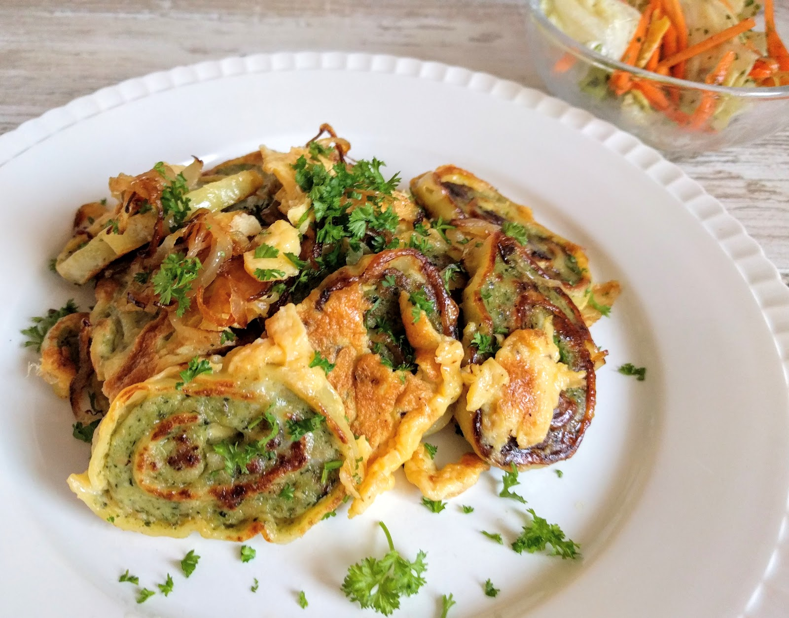

<h1>Maultaschen</h1>


<h2>Description</h2>
<p>Schwäbische Maultaschen. Quick, delicous, cheap</p>

<h2>Ingredients</h2>
<ul>
    <li>Maultaschen premade</li>
    <li>2x eggs</li>
    <li>basel, salt, pepper</li>
    <li>oil</li>
</ul>

<h2>Steps</h2>
<ol>
    <li>slice Maultaschen</li>
    <li>fry with oil</li>
    <li>add eggs</li>
    <li>wait until brown</li>
    <li>È voila, n Guten!</li>
</ol>